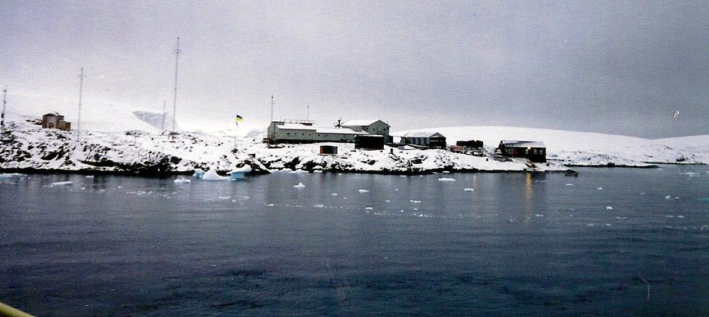

Zodiacs from the Laurence M. Gould through the sea ice to the Ukrainian base on Galindez Island — a desalination plant, a British-built bar, and the best vodka on the peninsula.
Winter-overs at Palmer Station were allowed to visit the other bases along the peninsula, and Vernadsky was the one everybody wanted to see. Getting there meant Zodiacs off the Laurence M. Gould, working through sea ice for the last of it.
It was Antarctic dark by the time we got ashore. That is the whole reason there is no film of the visit itself — the camera came out on the boat, and then the light was gone. What survives of the station is seven photographs.
Vernadsky was British before it was Ukrainian. This was Faraday Station, one of the long-running British bases on the peninsula, handed over to Ukraine in 1996 — and much of what the British built is still standing and still in use, which is a good part of the station's charm.
Victor, the station manager, gave us the tour. They run a saltwater desalination plant, which is less glamorous than it sounds and more important than almost anything else on a rock in the Southern Ocean. They also make excellent vodka.
The bar came with the building. The British carpenters built it out of timber meant for a pier, and when the base changed hands the bar changed hands with it. Posts and beams, a proper counter, ship's flags overhead, and photographs of the place in earlier decades on every wall.
It is the reason people talk about Vernadsky. On the evidence of these two photographs, the reputation is earned.